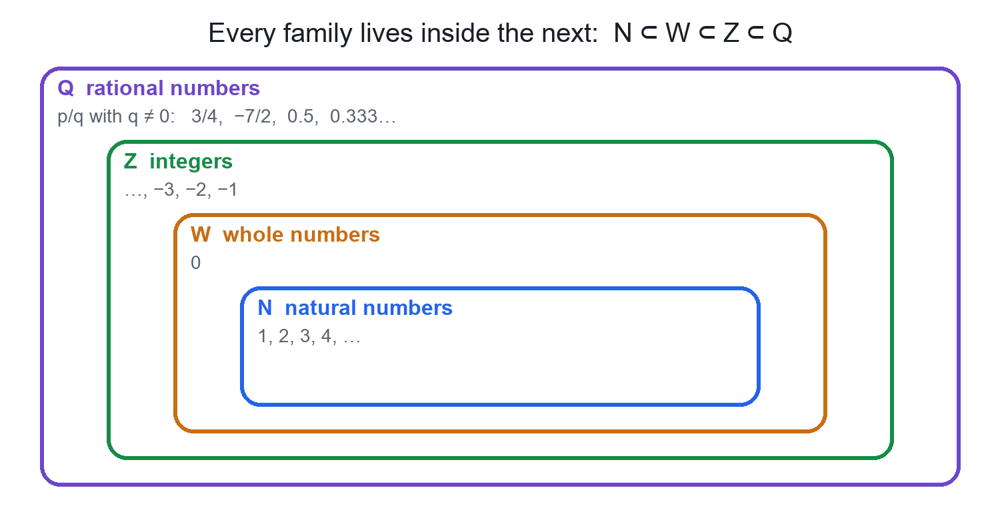

Chapter 1 · Mathematics
Natural, Whole, Integers and Rational Numbers
Video not playing? Watch on Instagram · YouTube
Each new family of numbers answers a question the old one could not, and every family lives inside the next: N ⊂ W ⊂ Z ⊂ Q.
Download the short notesPDF, 95 KB · solved examples, practice set and answer key Up next in this chapter
 Rational Numbers on the Number LineTo place p/q, cut each unit into q equal parts and count p parts from 0: right for positive, left for negative.Mathematics · simulation
Rational Numbers on the Number LineTo place p/q, cut each unit into q equal parts and count p parts from 0: right for positive, left for negative.Mathematics · simulation
Key points
- N = {1, 2, 3, …}; W = {0, 1, 2, …}; Z = {…, −2, −1, 0, 1, 2, …}.
- Q = p/q with p, q integers and q ≠ 0.
- N ⊂ W ⊂ Z ⊂ Q: every integer is rational (n = n/1).
- 5/0 is not a number; 0/5 = 0 is fine.
Four families, one inside the next

| Family | Set | The question it answers |
|---|---|---|
| Natural numbers (N) | {1, 2, 3, 4, …} | How do we count? |
| Whole numbers (W) | {0, 1, 2, 3, …} | How many apples on an empty plate? Zero. |
| Integers (Z) | {…, −3, −2, −1, 0, 1, 2, 3, …} | Temperature below zero, like −5 °C? |
| Rational numbers (Q) | p/q, p and q integers, q ≠ 0 | Half a pizza each for two friends? 1/2. |
Key ideas
- An integer n is rational because n = n/1 (5 = 5/1, −3 = −3/1).
- Rationals can be positive, negative or zero: 3/4, −7/2, 0 = 0/5.
- A rational number has many forms: 1/2 = 2/4 = 50/100.
- Not every number is rational: √2 and π cannot be written as p/q (irrational, the next topic).
Rational number = p/q, with p, q integers and q ≠ 0
Examples and common mistakes
- 7 is natural, whole, an integer and rational.
- 0 is whole, an integer and rational, but not natural (in CBSE / NCERT, N starts at 1).
- −4 is an integer and rational, but not whole or natural.
- 2/3 and −1/2 are rational only.
Quick quiz
5 questions. Choose an answer for each, then submit to see your score and the explanations.